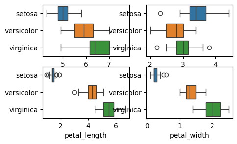
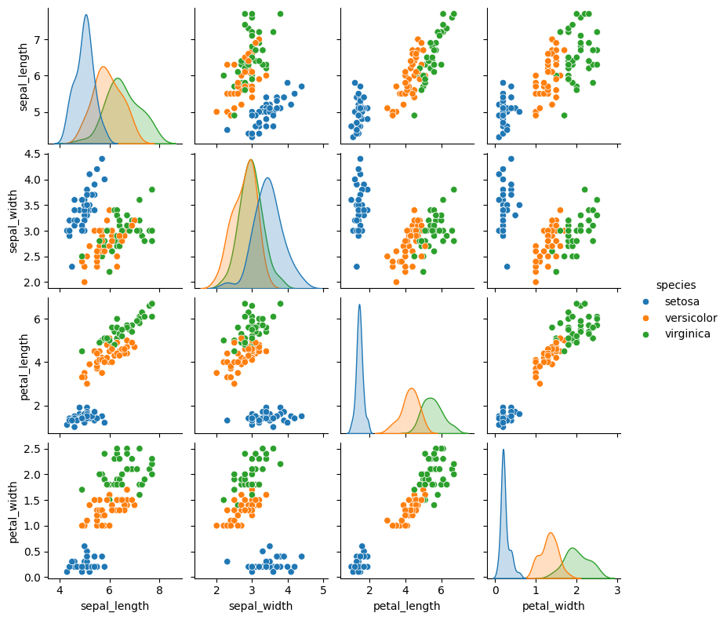

# 라이브러리 불러오기
import numpy as np
import pandas as pd
import matplotlib.pyplot as plt
import seaborn as snsPROJECT2 : 붓꽃 분류
1. 데이터 셋
- seaborn에서는 붓꽃에 대한 데이터를 제공함
- 붓꽃의 품종에 영향을 미치는 요인은 무엇인지 파악하고, 모델학습을 통해 품종을 예측하고자함
2. 데이터 확인 및 전처리
# 데이터 불러오기
df = sns.load_dataset('iris')
df.head()| sepal_length | sepal_width | petal_length | petal_width | species | |
|---|---|---|---|---|---|
| 0 | 5.1 | 3.5 | 1.4 | 0.2 | setosa |
| 1 | 4.9 | 3.0 | 1.4 | 0.2 | setosa |
| 2 | 4.7 | 3.2 | 1.3 | 0.2 | setosa |
| 3 | 4.6 | 3.1 | 1.5 | 0.2 | setosa |
| 4 | 5.0 | 3.6 | 1.4 | 0.2 | setosa |
# 데이터 확인
df.info()<class 'pandas.core.frame.DataFrame'>
RangeIndex: 150 entries, 0 to 149
Data columns (total 5 columns):
# Column Non-Null Count Dtype
--- ------ -------------- -----
0 sepal_length 150 non-null float64
1 sepal_width 150 non-null float64
2 petal_length 150 non-null float64
3 petal_width 150 non-null float64
4 species 150 non-null object
dtypes: float64(4), object(1)
memory usage: 6.0+ KB# 데이터 전처리 : 결측값확인
df.isna().sum()sepal_length 0
sepal_width 0
petal_length 0
petal_width 0
species 0
dtype: int64- 결측값은 없었음.
3.데이터 분할 : 학습데이터, 평가데이터
- 학습 데이터와 평가 데이터를 8:2 비율로 분할함
# 학습/평가 데이터 분할(8:2 비율)
X = df.drop(columns = 'species') #feature
y = df['species'] #target
from sklearn.model_selection import train_test_split
X_train,X_test,y_train,y_test = train_test_split(X,y,test_size=0.2, random_state=42)
4. 데이터 탐색
# 상자수염 그래프
df_train = pd.concat([X_train,y_train],axis = 1)
plt.figure(figsize=(5,3))
for i,feature in enumerate(X_train.columns):
plt.subplot(2,2,i+1)
sns.boxplot(x=feature,y='species',hue = 'species',data=df_train)
plt.ylabel('')
plt.show()
# 산점도
sns.pairplot(df_train,hue='species',height =2)
plt.show()
5. 분류모델 학습
# 최적의 k값 선택
from sklearn.neighbors import KNeighborsClassifier
from sklearn.model_selection import cross_val_score
k_range = range(1,20,2)
k_scores = []
for k in range(1,2):
knn = KNeighborsClassifier(n_neighbors=k)
scores = cross_val_score(knn,X_train,y_train, cv=5, scoring='accuracy')
k_scores.append(scores.mean())
print(f"k={k}일때 정확도: {scores.mean():.3f}")k=1일때 정확도: 0.950# 모델 성능이 가장 좋은 k 값 선택
best_k = k_range[k_scores.index(max(k_scores))]
print(f"최적의 k값은 {best_k}이며 ,평균 정확도는{max(k_scores):.3f}")최적의 k값은 1이며 ,평균 정확도는0.950# K-NN분류모델 생성 및 학습
knn = KNeighborsClassifier(n_neighbors=best_k)
knn.fit(X_train,y_train)
#학습데이터로 학습한 분류모델에 평가 데이터를 입력하여 클래스 분류
y_pred = knn.predict(X_test)
#분류모델 평가: 정확도, 정밀도, 재현도
from sklearn.metrics import accuracy_score,precision_score,recall_score
accuracy = accuracy_score(y_test,y_pred)
precision = precision_score(y_test,y_pred,average='micro')
recall = recall_score(y_test,y_pred,average='micro')
print(f'정확도: {accuracy:.3f}')
print(f'정밀도: {precision:.3f}')
print(f'재현도: {recall:.3f}')정확도: 1.000
정밀도: 1.000
재현도: 1.000